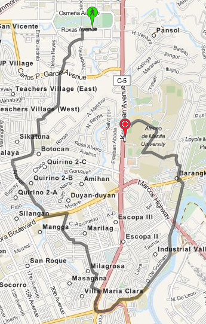

© 2013 Thomas Dy - Powered by Nikola
© 2013 Thomas Dy - Powered by Nikola
One of the weird things that happens with OTP is sometimes it gives absurdly roundabout routes. Here is OTP's suggested route for walking from UP to Ateneo:

This is just so hilariously wrong. It's much simpler to just walk along Katipunan Avenue.
OTP couldn't possibly be that dumb though, so there must be something we're doing wrong. If you notice, Katipunan Avenue is colored red compared to the other streets. OTP seems to be avoiding any path that goes along Katipunan Avenue. The problem might have something to do with the "road type" designated to Katipunan.
Apparently, by default OTP will consider roads of type trunk to be non-walkable and non-bikable. This is documented in the OpenStreetMap wiki and the OTP wiki as well. There are actually multiple ways to go about this then. The first solution that came to mind was to just edit the original OSM XML file.
sed -i .bak s/trunk/primary/g manila.osm
And rebuild the graph. It doesn't really matter much because the OSM data isn't used to render the maps. It's just used to build the routing data. This is actually what I did for maps.pleasantprogrammer.com.
It's also possible to set the default way properties in OTP. Instead of disallowing walking and biking on highway=trunk we could allow that. This is not much better than the sed solution though. It's better since you keep the weighting done by OTP, but you're still saying that all trunks are walkable which might not be the case.
The most correct way to actually fix this is to go through each of the trunks and specifying foot=yes and bicycle=yes for those trunks that are actually walkable. You could either do this locally with the dumped data, or contribute it directly to OSM. I'm not sure on the particulars with updating OSM though.
© 2013 Thomas Dy - Powered by Nikola